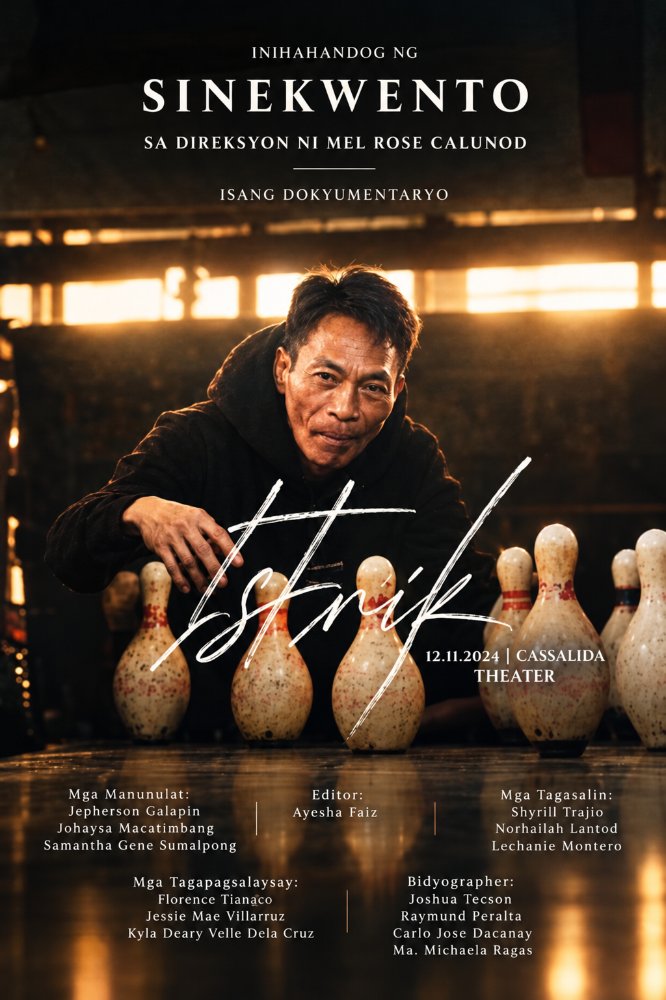

01 / Documentary · PAN126
SINEKWENTO
✳ 1st Place · Best in Documentary Poster
A documentary about a “boy,” as helpers at the bowling alley are called, who sleeps at the facility and helps clean and organize the space in exchange for food and a place to stay. The poster introduces a story about work, shelter, and the often-unseen people who keep everyday places running.
Created for PAN126 — Pamahayagang Pangkampus. The poster received first place for Best in Documentary Poster among eight documentary entries.
Documentary poster · Original design